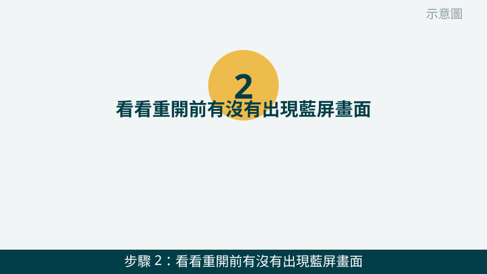
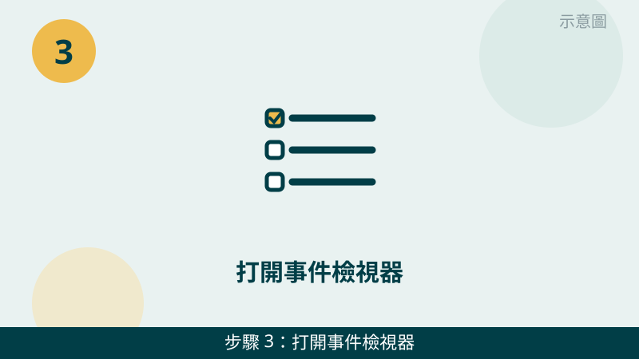
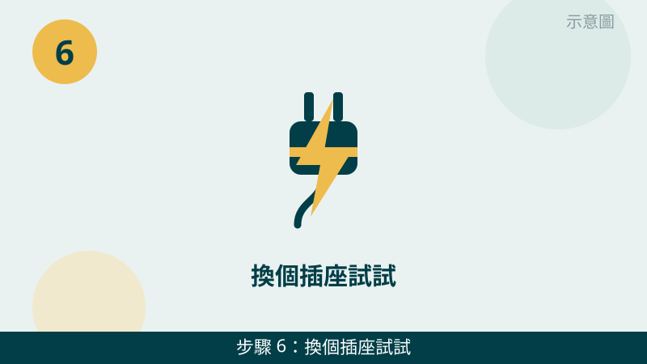

電腦用到一半突然自己重開、或是剛開機沒多久又重開一次，確實會讓人很不安。但請先放心：一直重開的原因有很多種，不一定是整台電腦壞掉。先照下面的順序檢查，一步一步縮小範圍，判斷會清楚很多。
開始之前先跟您說明一個判斷原則：「什麼時候重開」比「重開幾次」更重要。更新完才開始重開、玩遊戲等高負載時才重開、毫無規律隨機重開，背後的原因完全不同。您先回想一下屬於哪一種，檢查時會更有方向。
重開的畫面先傳給我們看
把藍屏代碼、事件檢視器的錯誤畫面拍下來傳 LINE，重開時機也一起告訴我們，通常能先分清是更新、過熱、驅動還是電源方向。先免費評估、報價透明，確認後再預約維修。
電腦一直自動重開機自救檢查清單（由簡到難）
- 1. 先記下「什麼時候重開」，這是最重要的線索。請回想並記下來：是剛開機就重開、用到一半突然重開、更新完才開始重開、還是玩遊戲或轉檔等高負載時才重開。怎麼判斷：更新完才開始，多半往更新與驅動方向想；高負載才重開，先往過熱方向想；毫無規律隨機重開，比較往電源與記憶體方向想。
示意圖（非官方截圖） - 2. 看看重開前有沒有出現藍屏畫面，把錯誤代碼拍照記下來。如果重開前出現藍色畫面，上面會有一串英文與數字的錯誤代碼，請直接拍照記下來，不用自己上網查了就動手改設定。怎麼判斷：每次代碼都一樣，比較像是固定某個驅動或零件出問題；每次代碼都不一樣，比較像是記憶體或電源不穩定。

示意圖（非官方截圖） - 3. 打開事件檢視器，看重開前後發生了什麼。在工作列搜尋「事件檢視器」開啟 → 點「Windows 記錄」→「系統」，找到重開時間點前後的錯誤或警告，把那幾行拍下來。怎麼判斷：同一時間點反覆出現同一個錯誤來源，就是重要線索。提醒您：這裡只看就好，不要照網路文章亂改裡面的設定，不確定就先拍照問我們。

示意圖（非官方截圖） - 4. 感覺一下散熱：風扇是不是一直狂轉、機身是不是很燙。散熱不良時，電腦會為了保護自己而自動重開。先確認出風口有沒有被棉被、牆壁擋住，筆電使用時盡量放在平坦桌面上。怎麼判斷：高負載才重開、而且機身摸起來很燙，過熱保護的可能性就很高；平常輕度使用也重開，就比較不是散熱問題。
示意圖（非官方截圖） - 5. 拔掉最近新增的外接裝置，回想最近換過什麼。最近新接的外接硬碟、擴充裝置，或是最近更新的驅動與系統更新，都有可能是觸發點。先把外接裝置拔掉再用用看。怎麼判斷：拔掉後就不重開了，問題多半跟那個裝置或它的驅動有關；還是一樣重開，再往下一步查。提醒您：不要自行拆機拔內部的零件，不確定就先拍照問我們。
示意圖（非官方截圖） - 6. 換個插座試試，並留意電源有沒有異音或異味。先把電源改插到牆壁上的直接插座，排除延長線老化或接觸不良的可能。怎麼判斷：換插座後就穩定了，就是供電環境問題；還是一樣重開，而且電源處有異音或焦味，請立刻停用，不要再反覆開機測試。

示意圖（非官方截圖）
別再自己試了，出現這些情況請立刻停手
- 聞到焦味、看到冒煙、或聽到電源處有異音——請立刻關機、拔掉電源線，不要再開機測試
- 重開越來越頻繁，最後甚至開不了機、出現藍屏或黑屏
- 想自己拆電源供應器或主機內部零件但不確定怎麼拆——請先拍照問我們，不要硬拆，電源供應器內部有高壓，拆開有危險
- 重要資料還沒備份，而且檔案開始打不開或消失——請先停手保資料，不要再反覆重開機測試
如果您的電腦是打遊戲、剪影片等高負載時才重開，也建議順手看一下散熱狀況：過熱保護造成的重開，和風扇噪音常常是同一件事的兩種表現。我們的檢測會把溫度、電源、記憶體一起交叉比對，找出真正的原因再報價給您。
常見問題
台中電腦一直自動重開機，是不是中毒了？
不一定。自動重開最常見的原因是系統更新或驅動出問題、散熱不良導致過熱保護、或是電源供電不穩定，中毒只是其中一種可能。先照本文 6 步記下重開時機與錯誤代碼，拍照傳給我們，比較能快速縮小範圍；要完全確認，還是需要實機檢測，這部分評估不收費，請放心傳。
更新完才開始一直重開，可以自己還原更新嗎？
如果您確定是某次更新後才開始重開，可以先把更新時間與錯誤代碼拍照傳給我們，我們會先幫您判斷方向再建議下一步。系統還原或移除更新有時會影響其他設定，不建議您自己照網路文章一步步操作，萬一按錯反而更難處理，先拍照問會比較保險。
重開的狀況拍照傳 LINE 就可以先判斷嗎？
可以先給方向。把藍屏代碼、事件檢視器的錯誤畫面、以及重開發生的時機拍下來傳給我們，通常能先分清是更新、過熱、驅動還是電源方向；要完全確認，還是需要實機檢測，這部分評估不收費，請放心傳。